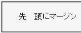

2003-11-07修正。Opera7.2でバグが解消しました。
本来は:first-letter擬似要素にマージンのプロパティを適用できるはずだが、Operaでは全方向のマージンが設置されない。
<style type="text/css">
p#fl:first-letter {
margin: 1em;
}
</style>
<p id="fl">先頭にマージン</p>
先頭にマージン
p要素内の1文字目「先」の周囲（左右）に1emのマージンが設置されるはずです。
※p要素に text-indent: 1em; を設定しているので、大抵は左側が2em分空いて見えるはずです。
WinIE6.0での表示（標準モード）
Opera7.0での表示（標準モード）